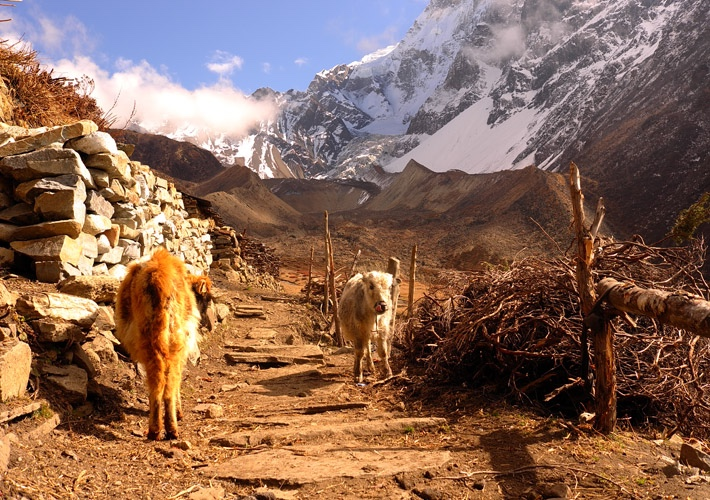

FAST FACTS
Over every mountains there is path, although it may not be seen from the valley.
Are you adventures?
Are you thinking for some off the beaten trail in Nepal, and then Manaslu might be your good choice with easy access and more remoteness within it. Manaslu Trekking is really famous for its virgin beauty with perfect blend of nature and culture as Manaslu Trek leads you to the heart of Nubri Himalayan Region and merge finally with certain section of Annapurna Circuit at Dharapani from where on can retrace back to Kathmandu terminating the Manaslu Circuit Trek or continue toward Annapurna Circuit or Tilicho Lake.
Manaslu Trials
Seven Fast Facts
#1 Mount Manaslu is eighth highest mountain across the globe, which was closed until 1992 and still nowadays it is under controlled tourism policy under restricted region on Nepal for trekking. There are two summit of Manaslu near by along with other surrounding ridges peak of Ngadi Chuli, Himalchuli and Bouddha Himal.
#2 Trekking in Manaslu is famous for its natural high Himalayas as well as ethnic local culture, traditional monastery and local people with unique housing style. No doubt Manaslu is jewels of middle west of Nepal where teahouse trekking is possible around its incomparable beauty and diversity.
#3 Mount Manaslu, which is located on Gorkha District of Nepal has lot more to offer as renowned temple of Manakamana, Lower Manaslu Trek, Tsum Valley Trek, Nubri Trek with famous palace of King Prithivi Narayan Shah. Not only this Manaslu Trek start from Arughat Gorkha and end at Dharapani, Beshi Sahar that is starting point of Thorong La Pass Trek.
#4 Manaslu Region encounter with countable visitor in compare to other famous trekking trail like Annapurna Base Camp Trek, Everest Base Camp Trekking, which makes entire Manaslu Trek area unspoiled and more exclusive. Still Tsum is untouched by modernization, as people are more remote so are the housing and available facility in entire Tsum area where Gumba Lundang is the most remote and most to explore monastery.
#5 Toshio Imanishi and Gyalzen Norbu as a part of Japanese expedition team first climbed Mount Manaslu on 9th May 1956, after which also number of Japanese Team has concurred the summit of Manaslu so it is often known as Japanese Mountain with most of Japanese climber hitting the summit of Mount Manaslu instead of other mountains. It is also known as Killer Mountain because of its frequent icefall swapping numerous climbers.
#6 Ganesh Himal Base Camp can be trek from Gumba Lundang that is east end of Tsum Valley, side trip from Manaslu Trek. One-day trip from Gumba Lundang to Ganesh Himal Base Camp and back to Gumba Lundang is probably the least explored area in Nepal where no extra permits are needed than Tsum Valley and Manaslu Trekking permit with conservation area entry permits.
#7 Although Larke Pass is in lower elevation than other trekking pass like Thorong La Pass, Chola Pass it is more difficult because of its long walk of same higher elevation instead of ascending and immediate descending. Apart from that descending section toward Bimthang is more technical and almost impassable in heavy winter.
MOUNT MANASALU
Manaslu (8,152m) is an opportunity to enjoy quiet time trekking in pure bliss away from the noisy modern world.